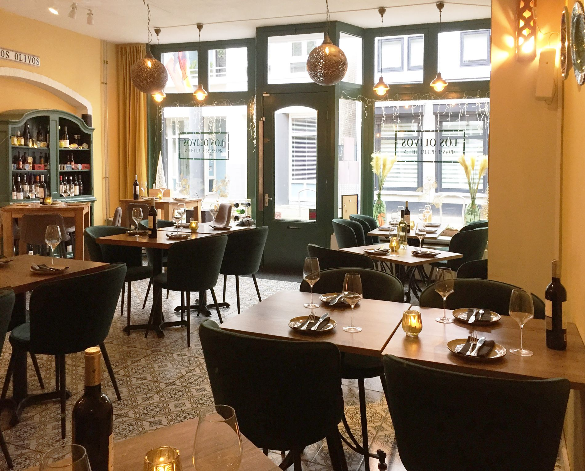
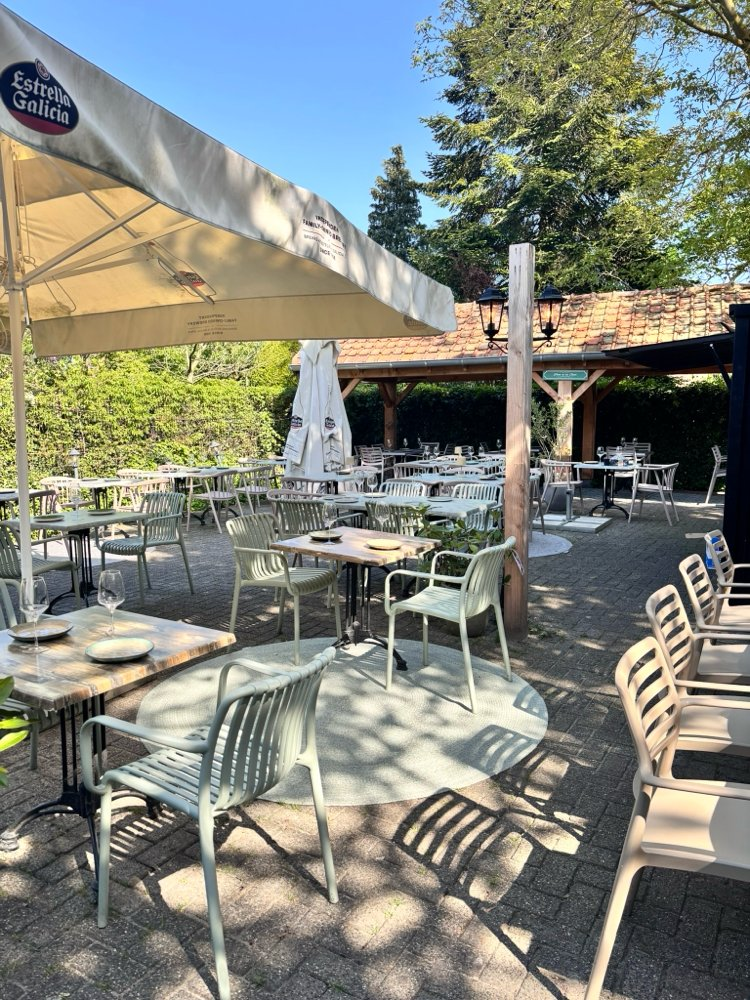
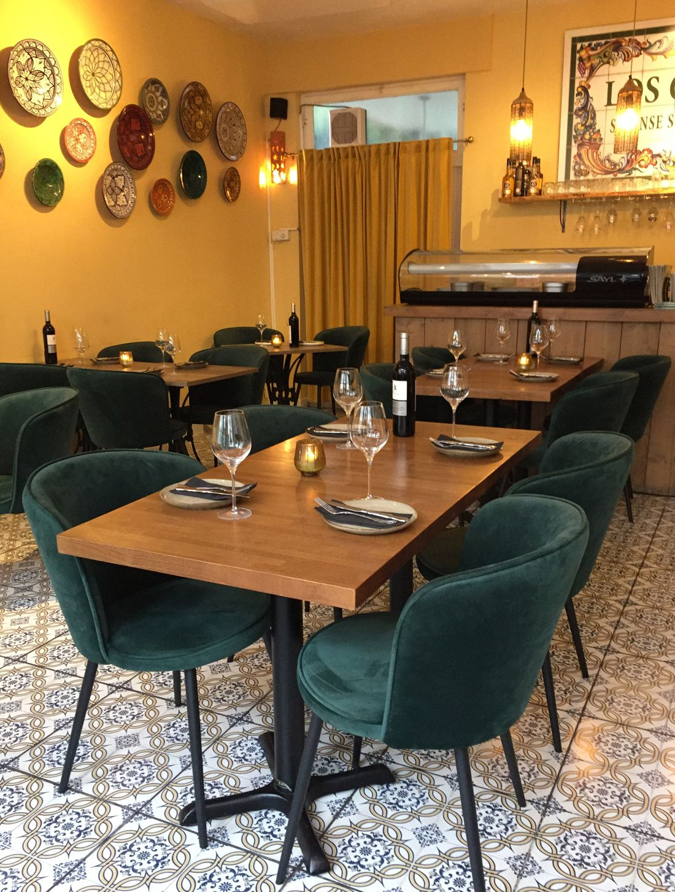
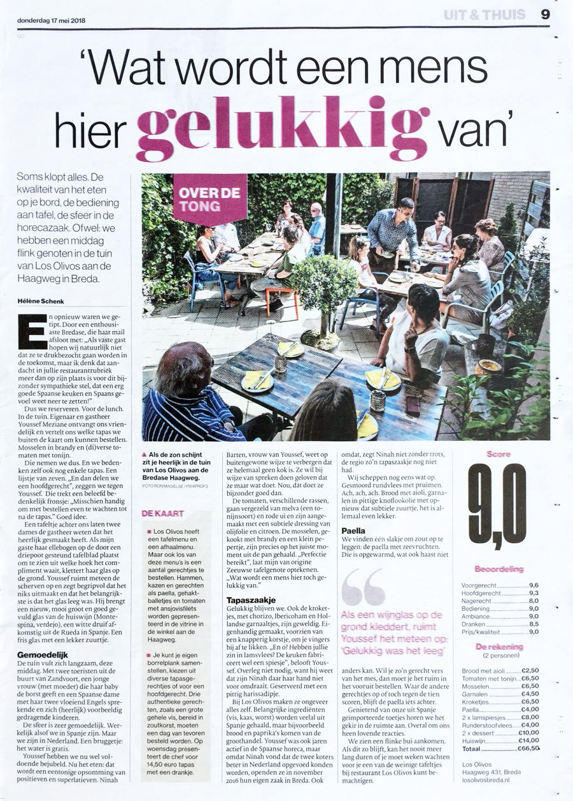
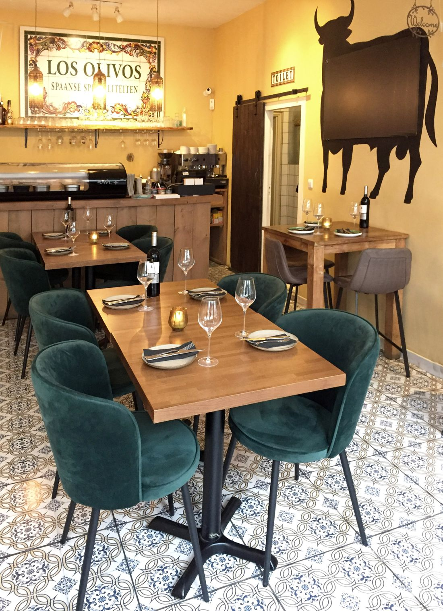

Authentieke Spaanse tapas in Princenhage
Alles vers en met liefde klaargemaakt, met wijnen die we zelf uit Spanje halen. Binnen in ons gezellige restaurant of bij mooi weer in de binnentuin, aan de Princenhaagse markt.
Restaurantrecensie in BN DeStem
Onze kaart
Tapas om samen te delen, of een paar gerechten per persoon. Op woensdag t/m zondag vanaf 17.00 uur.
Pan aioli
Desembol met aioli
Aceitunas
Olijvenmix
Lata sardinas
Blikje warm gestoofde sardientjes, Ramon Peña, Cristal crackers
Lata chipirones
Blikje warme kleine inktvisjes, zwarte inkt, Cristal crackers
Tabla mix
Plankje met Jamón Reserva, Chorizo Ibérico en Manchego kaas
Tabla kaas
Plankje met verschillende kazen
Pata negra
70 gr. Paleta de Bellota 5J, amandelen
Croquetas
Kroketjes, 6 stuks (keuze uit verschillende smaken)
Padrón
Gefrituurde padrón pepers
Tortilla
Kleine aardappelomelet
Espárragos
Groene asperges, romesco, manchego, balsamico crème
El tomate
Tomatensalade, burrata, crumble, basilicumolie, tomatenjam
Berenjenas
Gefrituurde aubergine, stroop
Ensalada anchoa
Little gem, ansjovis 0.0, salsa verde, piquillo crème, piparra
Bravas
Frites met bravasaus
Parrillada
Gegrilde groente, hummus, verse munt, komijnzaad, harissa
Boquerones en vinagre
Gemarineerde gepekelde ansjovisjes
Tartar de atún
Tonijntartaar, avocado, ponzu, wasabimayonaise
Gambas pil pil
Gepelde garnalen, olijfolie, Spaanse peper, knoflook
Calamares andaluz
Gefrituurde inktvis
Bacalao confit
Gekonfijte bacalao, gegrilde groente, zwarte aioli
Vieiras con alcachofas
Coquilles, artisjok, jamón crumble, romesco
Gambones
Grote gamba's (ongepeld), piri piri, salsa verde
Pulpo
Gegrilde octopus, sola glaze, mousseline
Filete de atún
Gegrilde tonijnfilet, piquillo crème, citrusvinaigrette
Beef tataki
Tataki van kogelbiefstuk, Tomasu soja, wasabimayonaise, lenteui, Spaanse peper
Presa Ibérica
Iberisch varken, chimichurri, padrón
Pinchito de cordero
Lamsspiesje van lamslende, charmoula kruiden, harissa, gerookte aubergine (2 stuks)
Mini hamburguesa
Mini runderhamburgers, chipotle (2 stuks)
Pollo limón
Gestoofde kippendijen, ingemaakte citroen, olijf
Estofado
Runderstoof, champignon, truffelmayonaise, brioche
Steak Los Olivos
Entrecote Natuurvlees, kalfsjus, mousseline
Panceta Ibérica
Iberisch buikspek, brioche, little gem, tomatenjam (2 stuks)
Tarta Santiago
Amandeltaart, frambozencoulis, slagroom
Tarta de queso San Sebastián
Cheesecake, blauwe bes, slagroom
Brownie caramelo
Brownie, karamel, pecan, vanille-ijs
Limón merengue
Citroen-merengue taartje, slagroom
Tabla de queso
Kaasplankje
Ben & Jerry's
Cookie dough ijs
Witte wijnen
Huiswijn · Macabeo Verdejo
Fris en fruitig. Smaakvolle en toegankelijke verdejo.
La Huida · Albariño
Frisse zuivere albariño uit Rías Baixas. Aroma's van rijp wit fruit.
Rode wijnen
Huiswijn · Rioja crianza
Klassieke houtgerijpte Rioja, gemaakt met 100% tempranillo.
Prado Rey · Ribera del Duero
Gebalanceerde wijn met zachte, aangename tannines. Vol en kruidig.
Rosé en cava
Huiswijn · Abadia
Zalmroze sappige rosé. 100% tempranillo.
Cava · Brut
Spaanse mousserende wijn uit de regio Penedès, Catalonië. Ook als 0.0%.
Dit is een greep uit onze wijnkaart; per fles kiest u uit nog veel meer Spaanse wijnen. Kijk ook op het krijtbord voor speciale wijnsuggesties buiten de kaart.


Binnen gezellig, buiten in de binnentuin
Binnen zit u in ons gezellige restaurant, tussen de Spaanse tegels en borden aan de muur. Bij mooi weer neemt u plaats in onze binnentuin, midden in Princenhage.
Het restaurant is niet groot. Reserveer daarom liever even vooraf, zeker in het weekend.
"Buiten het weer voelde het nét alsof we in Spanje waren. Bedankt!"
A. van der Velden, restaurantreviews.nlMet een grote groep
Voor groepen vanaf 10 personen serveren we een vast menu voor de hele groep. Met allergieën en dieetwensen houden we graag rekening.
Komt u met 10 personen of meer?
Reserveer uw tafel en geef uw menukeuze bij de reservering aan ons door. Vragen? Bel ons gerust.
Wat gasten zeggen
Gemiddeld 5,0 uit 5 op restaurantreviews.nl.

"Soms klopt alles."
"De kwaliteit van het eten op je bord, de bediening aan tafel, de sfeer in de horecazaak." Zo begon de recensie van Los Olivos in de rubriek Over de tong van BN DeStem.
"Het was donderdagavond, maar het was goed dat we gereserveerd hadden, want alle plaatsen waren bezet en eigenlijk is dat geen wonder, want het is er niet alleen heel sfeervol, maar eten is ook fantastisch. De bediening is vlot en alert."
Charles Timmerman"Heerlijk gegeten, allerlei verschillende gerechten geprobeerd en allemaal net zo lekker. Service was erg vriendelijk, de chef kwam ook nog gedag zeggen aan tafel. Zeker de moeite waard om hier te komen eten!"
Gloria vd Werf"Geweldige sfeer, gezellig en vooral, heerlijk eten en mooie cocktails. Bedankt weer voor de fijne avond."
Michel Wannet"Heerlijk klein restaurantje, lekkere tapas. We hebben gewoon de chef laten kiezen."
Corné JongeneelenReviews van restaurantreviews.nl

Over Los Olivos
Los Olivos is het restaurant van Youssef en Ninah. Sinds 2016 zitten we aan de Haagweg, aan de Princenhaagse markt. Youssef ontvangt u in de zaak, Ninah staat in de keuken.
Wij maken alles zelf, vers en met liefde. Ingrediënten als ham, kaas en olijfolie halen we uit Spanje, en ook onze wijnen selecteren en importeren we zelf.
Reserveren
Reserveer online of bel ons. Hopelijk mogen we u snel ontvangen. ¡Hasta pronto!
Reserveer een tafel
Kies online zelf een dag en tijd, of bel of mail ons.
Openingstijden
Een reservering duurt twee en een half uur. Omdat ons restaurant klein is, kunnen daarna weer andere gasten aan uw tafel.